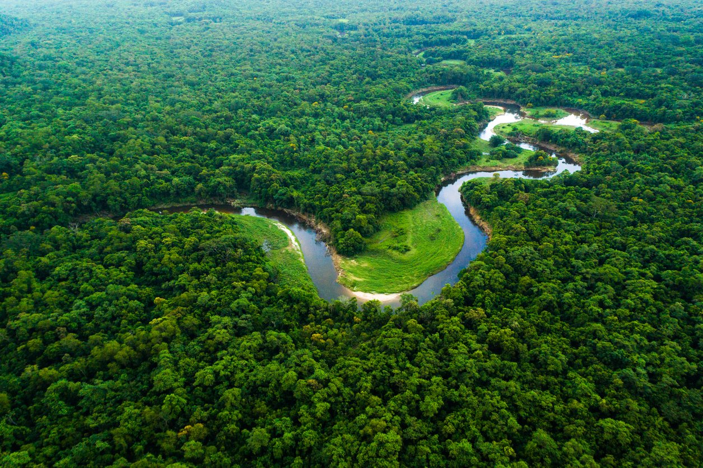
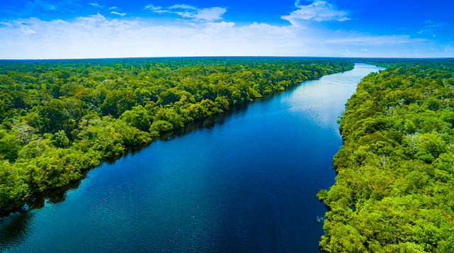
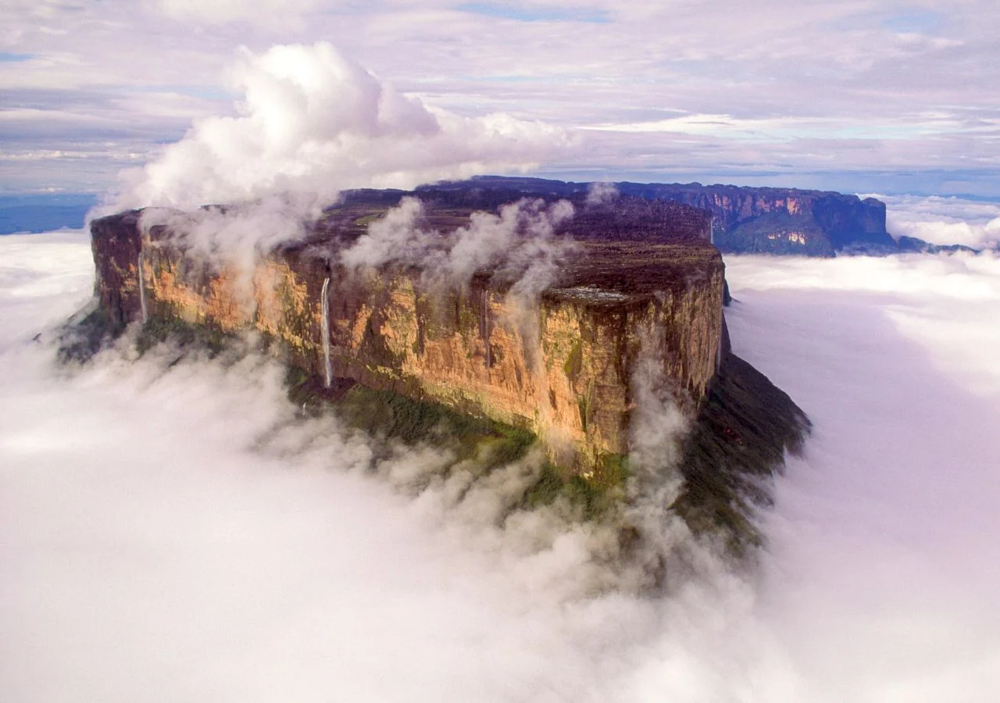
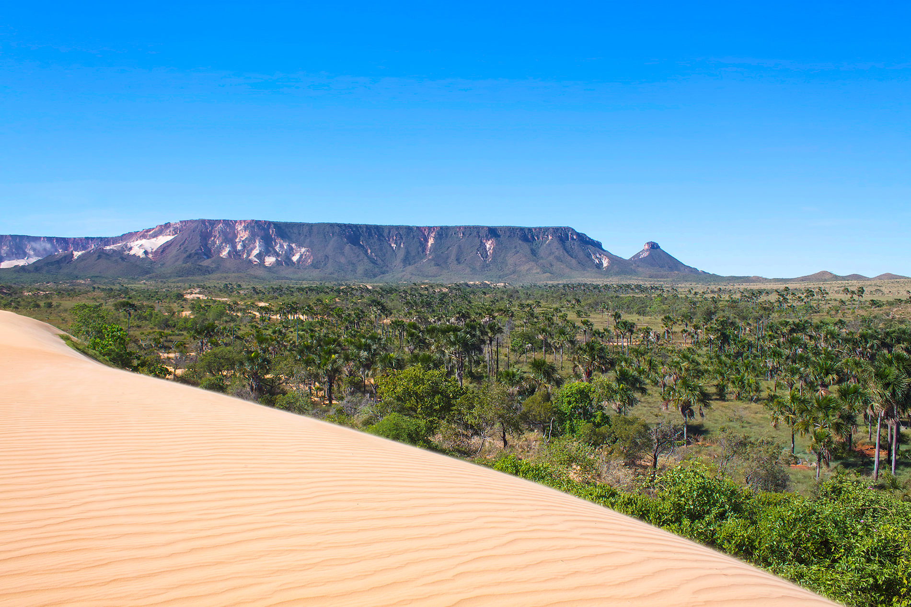
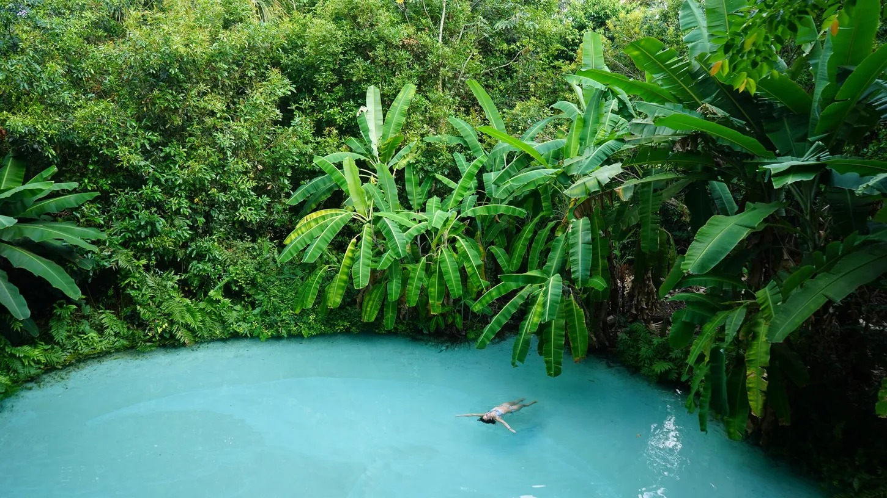

Norte
O Norte do Brasil é um convite à imersão na natureza mais exuberante e intocada do planeta. Dominada pela vastidão da Floresta Amazônica e cortada por rios majestosos, esta região é um santuário de biodiversidade, abrigando paisagens únicas que vão desde a densidade da floresta até formações geológicas impressionantes. Uma jornada por aqui é uma experiência profunda de conexão com a essência selvagem do Brasil.
Floresta Amazônica e Encontro das Águas
A Floresta Amazônica é um tesouro mundial, um universo verde que pulsa com vida em cada folha e cada rio. Em Manaus, a grandiosidade da natureza se revela de forma singular no Encontro das Águas, onde os rios Negro e Solimões correm lado a lado por quilômetros sem se misturar, criando um espetáculo visual de tons escuros e barrentos. É um lembrete vívido da força e da magia dos ecossistemas fluviais e da maior floresta tropical do mundo.


Monte Roraima
Uma montanha colossal e misteriosa, o Monte Roraima se ergue como um gigante adormecido na tríplice fronteira entre Brasil, Venezuela e Guiana. Seu topo plano, coberto por formações rochosas que desafiam a imaginação, rios de águas avermelhadas e paisagens que parecem de outro planeta, faz dele um dos locais mais desejados para os aventureiros. É uma jornada épica que recompensa com vistas e experiências inigualáveis.


Jalapão (Tocantins)
O Jalapão, no coração do Tocantins, é um oásis de contrastes surpreendentes. Suas famosas dunas douradas se estendem em meio ao cerrado, oferecendo um espetáculo ao pôr do sol. Mas o verdadeiro encanto está nos seus "fervedouros", piscinas naturais de águas cristalinas com nascentes que impedem que você afunde, criando uma sensação mágica de flutuação. Cachoeiras e formações rochosas completam o cenário de aventura e beleza exótica.

